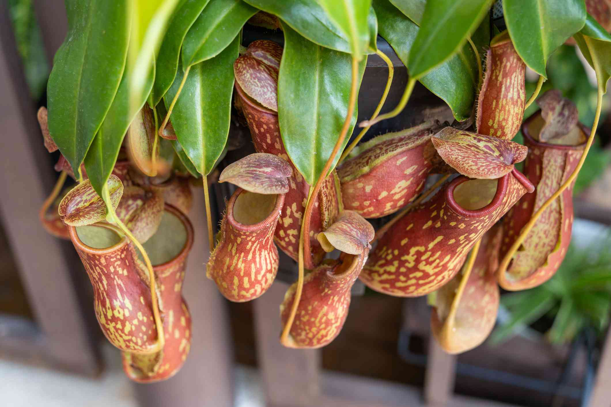

Sus jarras atraen insectos con colores llamativos y néctar, y los retienen para obtener nutrientes.
Nepenthes es un género de plantas carnívoras. Sus hojas forman recipientes con líquido digestivo, adaptados para capturar pequeños animales.
Las plantas jarra del género Nepenthes crecen en selvas tropicales y zonas montañosas del sudeste asiático.
¿Cómo caza?
El color de las jarras y el néctar del borde atraen a los insectos. La superficie resbaladiza los conduce al interior de la trampa.
Sentidos
